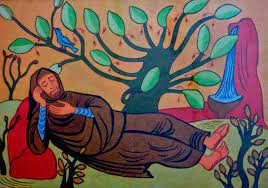

|
Corría el siglo IX, el abad Virila, abad de Leyre, preocupado por el sentido de la vida eterna
y el misterio de la eternidad, sale a dar un paseo y oyendo el canto de un ruiseñor, se quedó
extasiado escuchándolo y entró en un profundo sueño.
Cuando despertó era ya de noche volvió al
Monasterio y llamó a las puertas, cuando las
abrieron, él se presentó como abad de Leyre, pero
nadie le conocía.
Intrigado un monje consultó libros anteriores y
comprobó que efectivamente 300 años antes había
habido un abad llamado Virila, que un día había
desaparecido.
Estando en la iglesia se abrió la bóveda de la misma y de repente apareció el pajarillo con el
anillo abacial, se lo puso al abad y se oyó la voz de Dios diciéndole al abad… “Virila, piensa
que 300 años han pasado en un momento escuchando el canto de un ruiseñor, imagina cómo
será la eternidad a mi lado, será un momento”.
¿Te animas a visitar el Monasterio?...Quizá el abad te esté esperando.
|

|